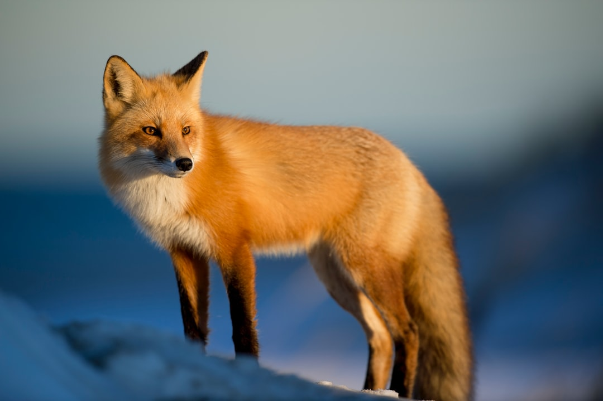

|  |
Foxes are small to medium-sized, omnivorous mammals belonging to several genera of the family Canidae. They have a flattened skull, upright triangular ears, a pointed, slightly upturned snout, and a long bushy tail (or brush).
Twelve species belong to the monophyletic "true foxes" group of genus Vulpes. Approximately another 25 current or extinct species are always or sometimes called foxes; these foxes are either part of the paraphyletic group of the South American foxes, or of the outlying group, which consists of the bat-eared fox, gray fox, and island fox.[1]
Foxes live on every continent except Antarctica. The most common and widespread species of fox is the red fox (Vulpes vulpes) with about 47 recognized subspecies. |